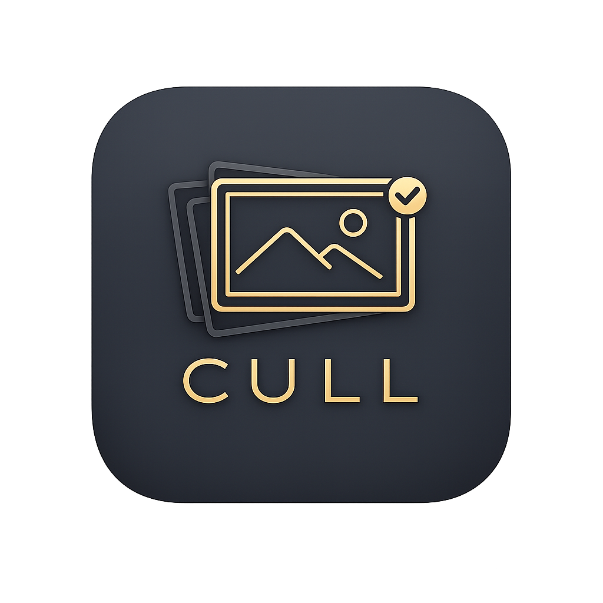

CULL, in a sentence, an icon and three screenshots.
Everything here may be used in coverage of CULL without asking. Please do not alter the icon or put it inside another shape.
Name and description
CULL, always in capitals.
One line: CULL is a desktop app that culls a RAW shoot by keyboard in minutes and saves every verdict where Lightroom reads it.
Longer: CULL is a culling tool for photographers, for Windows and Mac. Open a folder of RAW files, judge each frame with one key, keep, reject or favorite, and finish. Verdicts are written as Lightroom-compatible XMP, so the shoot is already sorted when it is imported. It reads Canon, Sony, Nikon, Fujifilm, Olympus, Panasonic, Leica and Adobe DNG files, and never changes the image inside them.
Maker
Oliver Søgaard-Andersen, Denmark. Contact through the support page.
Icon

Download the icon (PNG, 1024 px)